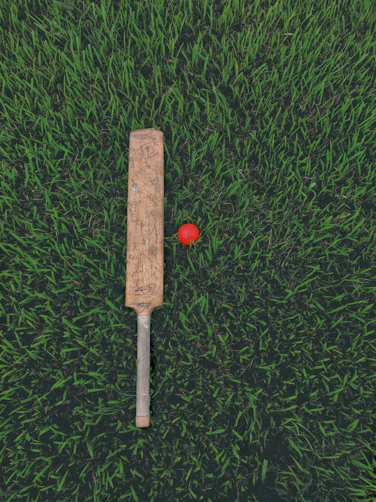

Welcome to my hobbies page! I'm passionate about a variety of activities that keep me engaged and entertained.
I find joy in the strategic game of chess,
the camaraderie of cricket and football matches,

and the thrill of online gaming, particularly in Counter-Strike.
Additionally, I'm an avid reader, always diving into new worlds through books,
and I have an immense love for music. I'm currently learning to play the guitar, even though I'm still a beginner.
Despite my skills being a work in progress, my enthusiasm for learning and enjoying these hobbies knows no bounds. Join me on my journey of exploration and growth in these diverse and exciting pursuits!